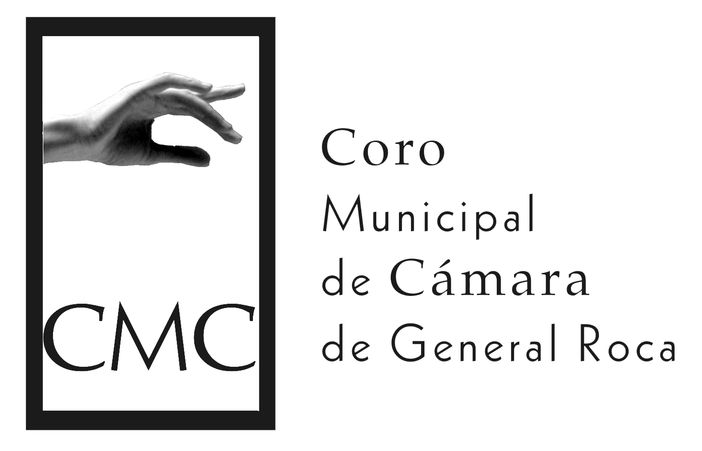

Te invitamos a crear: Después de darle play, podés cliquear en los botones de abajo para “mutear” o “desmutear” cada voz a tu gusto (sopranos, contraltos, tenores y bajos).Podrás escuchar cada voz por separado, combinarlas como quieras y harás tu propia versión del quodlibet. ¡Que lo disfrutes!


Y aquí te compartimos nuestra versión virtual del “Quodlibet folklórico” realizada desde nuestras casas en noviembre 2020